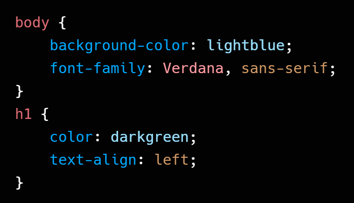

CSS, que significa Cascading Style Sheets (Folhas de Estilo em Cascata), é uma linguagem de estilo utilizada para estilização de um documento escrito em HTML. Enquanto o HTML é responsável pela estrutura e conteúdo de uma página web, o CSS cuida como essa estrutura e conteúdo serão exibidos visualmente. Pense no HTML como o esqueleto de uma casa e no CSS como a decoração, pintura e design de interiores. Sem o CSS, as páginas web seriam apenas texto preto e branco com links sublinhados, sem nenhum apelo visual ou organização.
Formas de Aplicar
Existem três maneiras de incluir CSS em um documento HTML, cada uma com suas próprias características e casos de uso.
CSS Inline
O CSS inline é aplicado diretamente a um elemento HTML usando o atributo style. É a forma menos recomendada. Geralmente, é usado para testes rápidos ou para sobrescrever estilos específicos.
Exemplo:
Vantagens:
Útil para estilos rápidos e específicos em um único elemento.
Sobrescreve facilmente outros estilos.
Desvantagens:
Mistura HTML e CSS, dificultando a leitura e manutenção.
Não é reutilizável, o que torna o código repetitivo para múltiplos elementos.
Aumenta o tamanho do arquivo HTML.
CSS Interno
O CSS interno é definido dentro da tag <style> no cabeçalho <head> do documento HTML. Os estilos definidos aqui se aplicam a todos os elementos daquela página HTML específica. É uma boa opção para páginas únicas.
Exemplo:
Vantagens:
Estilos aplicados a toda a página, sem a necessidade de repetir o código em cada elemento.
Útil para páginas únicas com estilos exclusivos.
Desvantagens:
Os estilos não podem ser reutilizados em outras páginas do site.
Se a página for muito grande, o arquivo HTML pode ficar poluído com o código CSS.
CSS Externo
O CSS externo é a forma mais recomendada. Os estilos são definidos em um arquivo separado com a extensão .css (por exemplo, style.css) e são vinculados ao documento HTML usando a tag <link> dentro do <head>.
No arquivo index.html:
No arquivo style.css:

Vantagens:
Separa completamente o conteúdo da apresentação.
O mesmo arquivo CSS pode ser usado em várias páginas, garantindo consistência.
Carregamento mais rápido.
Mantém o código limpo e organizado.
Desvantagens:
Requer um arquivo adicional para o CSS.
Para estilos muito pequenos e específicos de uma única página, pode ser um pouco excessivo.
Comentários
Comentários são trechos de código que são ignorados pelo navegador, servem apenas para documentar o código, explicar partes complexas e adicionar notas para outros desenvolvedores.
No CSS, os comentários são feitos usando a seguinte sintaxe:
Exemplo de comentário:
Um atalho muito útil para comentar partes do código, basta selecionar o que deseja comentar e pressionar Ctrl + / no Windows ou Cmd + / no Mac.
Sintaxe
A sintaxe básica do CSS consiste em um seletor e um bloco de declaração.
Estrutura:
Seletor: O nome do elemento HTML (por exemplo: p, h1, div), um ID, uma classe ou uma combinação deles.
Chaves {}: Delimitam o bloco de declaração, que contém todas as regras de estilo para o seletor.
Propriedade: O atributo de estilo que você deseja alterar (por exemplo: color, font-size, background-color).
Dois pontos (:) Separa a propriedade do seu valor.
Valor: O valor que você deseja aplicar à propriedade (por exemplo, blue, 16px, #f0f0f0).
Ponto e vírgula (;): Finaliza cada declaração. É crucial para separar as declarações e evitar erros.
Exemplo:
Neste exemplo, o seletor p aplica a cor verde, tamanho de fonte de 16 pixels e alinhamento justificado a todos os parágrafos. O seletor h1 aplica a cor roxa e a fonte 'Times New Roman' a todos os títulos de nível 1.